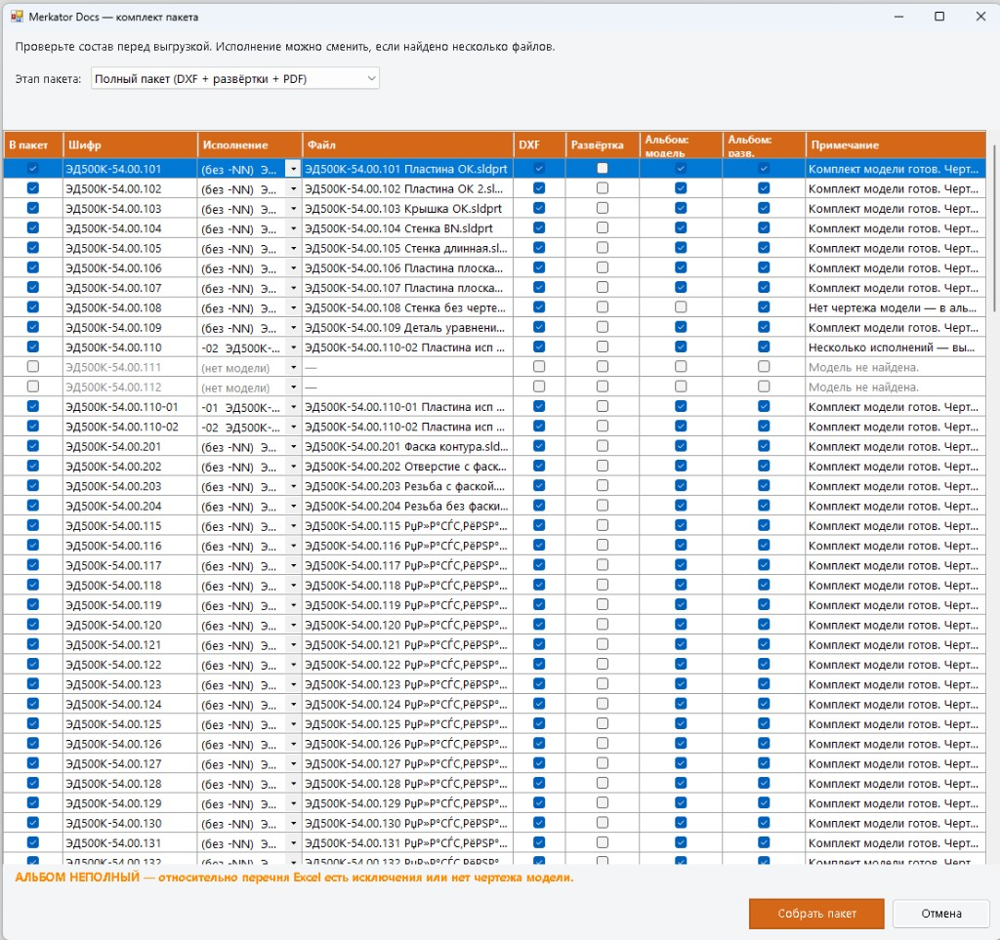
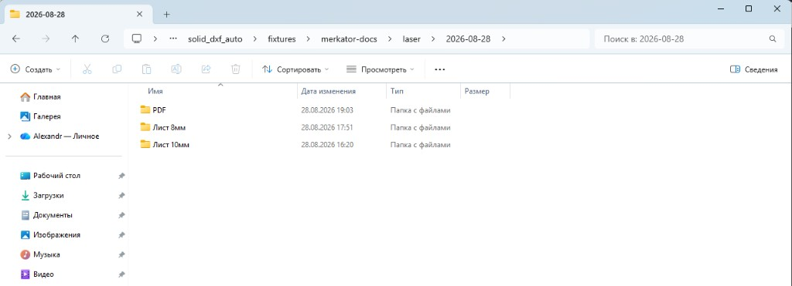
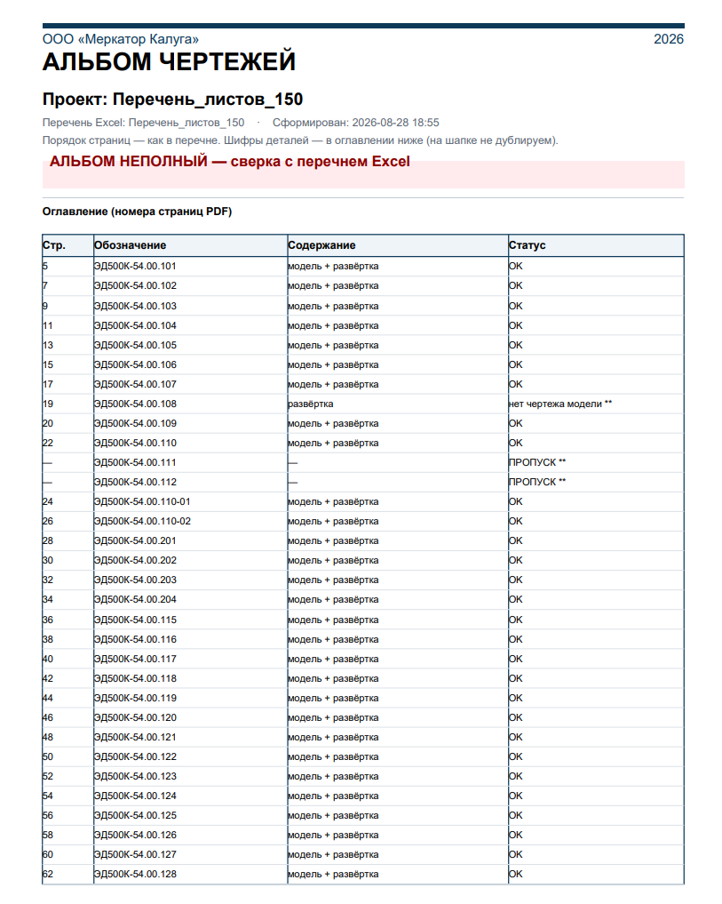

Было
5–10 ч
вручную на проект
SOLIDWORKS 2018 SP3 · надстройка «Пакет в цех»
Из одного перечня Excel — согласованный пакет для лазера, гибочного станка и архива. До 8 проектов в месяц, в каждом 100–200 деталей.
Прогон на 150 позиций (148 с моделью), SOLIDWORKS 2018 SP3, 28.08.2026.
Было
5–10 ч
вручную на проект
Стало
46 мин
полный пакет плагином
Выигрыш
6–13×
быстрее ручного прогона
27 мин
18 мин
| Показатель | Вручную | Плагин | Выигрыш |
|---|---|---|---|
| Полный пакет (DXF + чертежи + PDF) | 5–10 ч | 46 мин | 6–13× |
| На 1 позицию (полный цикл) | 2–4 мин | ~19 с | ~6–13× |
| Экспорт DXF (только контур) | ~1–2 мин | ~3,6 с | ~17–33× |
| PDF-фрагмент (1 лист чертежа) | ~0,5–1 мин | ~3,7 с | ~8–16× |
| PDF на позицию (модель + развёртка) | ~1–2 мин | ~8 с | ~8–15× |
Время плагина растёт с числом позиций, но остаётся на порядок ниже ручной обработки 100–200 деталей.
Ручные оценки — по опыту технологического бюро. Повторный прогон быстрее: готовые _развертка.slddrw и кэш PDF-фрагментов.



По заявкам из 1С технологическое бюро на каждый проект собирает комплект для цеха: развёртки в формате DXF (складываются вручную в папку «лазер»), чертежи развёрток, чертежи деталей. В типичном проекте — 100–200 позиций, и цикл повторяется с каждой новой заявкой.
Задача — ускорить оформление, передачу и проверку комплекта документов для цеха: от заявки из 1С до готовой папки «лазер».
Предлагаемый вариант
Надстройка по ТЗ-DOCS-01: цепочка «перечень → лазер» на SOLIDWORKS 2018 SP3, проверка комплекта до ухода в цех. Уже прогнана на 150 позициях — полный пакет за 46 мин.
Технологи продолжают ручной прогон. Нагрузка на ТБ растёт вместе с числом проектов.
Добавляет постоянный ФОТ, но не меняет процесс: те же шаги и риски пропуска позиции.
Редко закрывает цепочку целиком: ваш Excel, PDM, толщина, правила DXF и PDF-альбом.
Ниже — состав и стоимость пакета, затем формальный запрос на согласование.
Разовая поставка на площадке ООО «Меркатор Калуга» — полный объём по ТЗ-DOCS-01 и КП-DOCS-01, фиксированная цена 930 000 ₽.
Полные условия: ТЗ-DOCS-01, КП-DOCS-01 (по запросу).
Запрос к руководству
Согласовать КП-DOCS-01 (930 000 ₽) и ТЗ-DOCS-01, выделить тестовое хранилище PDM или папку на сервере для пилотной приёмки. Ориентир старта работ — 01.09.2026, приёмка — 10.11.2026 (резерв до 04.12.2026).
…
| Этап | Ориентир |
|---|---|
| Согласование + аванс 40% | нед. 1 |
| Excel, DXF, чертежи, PDF | нед. 2–8 (~46 раб. дн.) |
| PDM (при доступном хранилище) | нед. 7–9 |
| Обучение + приёмка SP3 | 10.11.2026 |
| Финальный платёж 20% | после акта |
Полный перечень: протокол П-01…П-08 в ТЗ-DOCS-01.
| Риск | Как снимаем |
|---|---|
| Не сработает на ваших моделях | Пилот на тестовом хранилище PDM до финального платежа |
| Риск для хранилища PDM | Только просмотр; без изъятия файлов и записи; сначала тестовое хранилище |
| Ошибки в комплекте | Проверка комплекта и пометка «альбом неполный» до цеха |
| Задержка из‑за ИТ или КБ | Резерв до 04.12; этапы без PDM идут параллельно |
| Привязка к SW 2018 | Зафиксировано в ТЗ и договоре; апгрейд — отдельное ТЗ |
Демо на вашем перечне, уточнение КП, пилот на тестовом PDM перед полной приёмкой.
Воробьёв А.С. · исполнитель
Задача, контекст, сравнение вручную / с плагином — для инженеров ТБ.
Задача шире экспорта DXF: связать конструкторский комплект с производством — из одного перечня Excel получить согласованный пакет для лазера, гибочного станка и архива.
Каждый пропущенный лист в перечне — потенциальный простой лазера или переделка на гибочном станке.
До 8 проектов в месяц × 100–200 позиций — тысячи артефактов (DXF, чертежи, страницы PDF).
Лазер и гибочный станок ждут цельный пакет за один проход, иначе узкое место сдвигается в цех.
Пропуск строки, не то исполнение из PDM, DXF не в папке толщины — итог переделка или неполный альбом.
КБ → ТБ → лазер → гибочный станок. Плагин закрывает «перечень → папка лазер».
Автоматизация всей цепочки — от Excel до папки «лазер». Каждый этап — отдельный блок; стрелки показывают, что куда идёт.
Технолог выбирает Excel и корень «лазер» — дальше плагин читает перечень.
«Перечень листов…» из 1С
Каждая строка — позиция
Первое слово в ячейке
100–200 позиций на проект
По каждому шифру — модель в SOLIDWORKS PDM. Только чтение, без записи в хранилище. Условия для КБ.
Из списка позиций
Поиск по всему PDM
SLDPRT / SLDASM
Актуальная в хранилище
Экран перед выпуском: что не нашлось, что выбрать вручную.
Список всех позиций
Подсветка, пропуск
Отметка в отчёте
Выбор исполнения
Контур листа для резки — в папку по толщине.
Вид развёртки / листа
Фаски, резьба — не на контуре
Имя по позиции
Подпапка толщины
Развёртку в модели создаём при прогоне. Чертёж _развертка.slddrw — только если его ещё нет.
Листовая деталь
_развертка.slddrw
Создаём лист
Лист в PDF
Один PDF на проект: оглавление и порядок листов для цеха.
Модель + развёртка
По шифрам из Excel
Модель → развёртка
Имя по Excel + дата
Готовый пакет для цеха и станка — в структуре даты и толщины.
{yyyy-MM-dd}
DXF по толщине
Альбом чертежей
Цех + лазер
Без хранилища нельзя гарантировать версию и конфигурацию детали на лазере. Надстройка не заменяет PDM — она берёт из хранилища нужные файлы. Выпущенные материалы в PDM не размещаются.
Режем и кладём в альбом ту ревизию, что в хранилище.
Исполнения -01, -02 — выбор на экране комплекта.
Поиск по шифру по всему хранилищу PDM, без записи в PDM.
Опасение, что автоматизация повредит хранилище моделей, обосновано. В ТЗ-DOCS-01 закреплён щадящий режим: надстройка действует как технолог при просмотре файлов, без полномочий администратора PDM.
Порядок внедрения: сначала проверка по согласованной папке (без PDM), затем тестовое хранилище PDM, и только после приёмки — рабочее хранилище в том же режиме «только чтение».
Сами развёртки в моделях обычно никто не хранит — плагин создаёт их при каждом прогоне. Зато чертёж _развертка.slddrw из прошлого проекта можно не трогать: он снова попадёт в альбом.
_развертка.slddrw — в альбом без пересоздания
Чертёжа нет — создаём лист (развёртку в модели — всё равно делаем)
Режимы на экране комплекта: только новые (по умолчанию), обновить отмеченные, пересоздать все.
Плагин создаёт папку даты и раскладывает DXF по толщине. PDF — в подпапку PDF.
\\лазер\{yyyy-MM-dd}\
Лист 2мм\
ШИФР-01.dxf
ШИФР-02.dxf
Лист 3мм\
…
PDF\
Перечень_2026-08-28_14-30.pdf